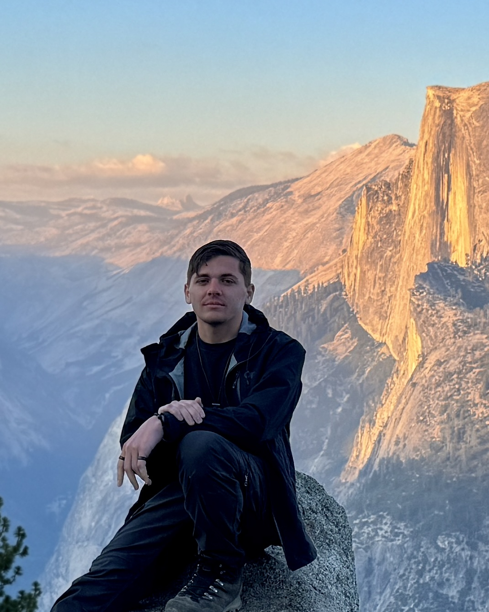
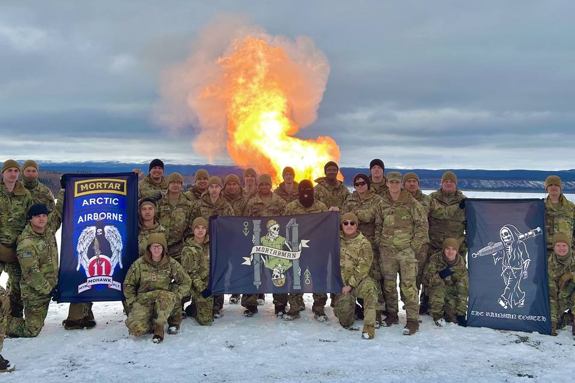

About
The rest of this site is about what I work on: statistics, computational methods, and my research and technical work. This page is for the rest of me. I have spent most of my adult life serving in the U.S. Army. I have also been known to frequently venture into the , traveling when I can, reading too many books, and working on side projects that usually start because I want to understand how something works. Those things are not a résumé in disguise. They are simply the places, interests, and experiences that occupy the rest of my time.
I tend to like things that reward preparation but without necessarily requiring perfect information. That is true in the field, on a mountain, and in technical work: prepare seriously, pay attention when conditions change, and be able to explain the decisions you make. The rest of the website covers what that looks like in my work; this page covers the parts of me that do not fit neatly into a research statement or CV.
Methodological emphasis on unsupervised learning, dimension reduction, and clustering, with a focus on statistical inference for consequential research and decision support.

01 / Military Service
Airborne Infantry in the Arctic
I began my service in the U.S. Army as an infantry paratrooper and later moved into an squad leader role in the 11th Airborne Division at Joint Base Elmendorf-Richardson, Alaska. As a noncommissioned officer, I trained and led soldiers, maintained accountability for personnel and equipment, and prepared teams to operate in Arctic and other austere environments. Operating in the Arctic taught me that preparation could not be afterthought; it was a priority necessary for survival—not in a hypothetical sense but in reality. It also gave me insight into the depth that preparation must have: plans had to survive changing conditions, instructions had to remain clear under pressure, and leadership meant being accountable for both the mission and the people carrying it out.

The solid line represents completed service time. The dashed line represents the projected period through the expected May 2027 commission. The red Today marker identifies the current date. The dashed 2LT rank marker is an expected future milestone. Colored service bands show overlapping roles; activate a role, rank, unit, or qualification to reveal its details.
02 / Mountaineering
Mountaineering
Mountaineering is my main counterweight to screen-bound work: long approaches, exposed ridgelines, cold weather, unusual geology, and the perspective that comes from seeing a place at human scale.
Mountain Profiles / Goal
Toward Denali
A curated set of visually distinctive mountains is arranged from lower summits toward Denali. Elevation remains a guide, but recognizable real-world silhouette takes priority over strict chart geometry.
Travel sits naturally beside mountaineering. I have crossed most of the United States and visited nearly every national park, along with travel through Japan, Morocco, France, Algeria, and Spain. What stays with me is less a checklist of places than the experience of seeing environments directly: the scale of Arctic landscapes, the aurora borealis, or the short-lived cherry blossom season in Japan.
03 / Reading
The bookshelf
What I read tends to move between statistics, military history, biography, fiction, and light novels. This is a small selection of what is currently on the shelf.
04 / Off the Clock
Off the clock
Most of my downtime is less complicated than the work.
I listen mostly to punk, metal, and rock, watch more horror than anything else, and have a particular weakness for Eighty-Six, Chainsaw Man, and Dark Souls. I also maintain a long-running interest in folklore, cryptids, demonology, and paranormal history, which I hope to turn into a casual podcast.
Most of the rest is simpler: books, technical side projects, travel, my longtime partner, and cats.